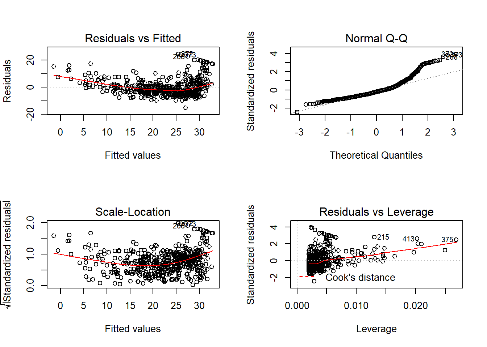

3 Lab: Linear Regression
This is a modified version of the Lab: Linear Regression section of chapter 3 from Introduction to Statistical Learning with Application in R. This version uses tidyverse techniques and methods that will allow for scalability and a more efficient data analytic pipeline.
3.1 Libraries
The library() function is used to load libraries, or groups of functions and data sets that are not included in the base R distribution. Basic functions that perform least squares linear regression and other simple analyses come standard with the base distribution, but more exotic functions require additional libraries. Here we load the MASS package, which is a very large collection of data sets and functions. We also load the ISLR package, which includes the data sets associated with this book.
library(tidyverse)
library(modelr)
library(janitor)
library(skimr)
library(broom)
library(corrplot)
library(ggfortify)If you receive an error message when loading any of these libraries, it likely indicates that the corresponding library has not yet been installed on your system. Some libraries, such as MASS, come with R and do not need to be separately installed on your computer. However, other packages, such as ISLR, must be downloaded the first time they are used. This can be done directly from within R. For example, on a Windows system, select the Install package option under the Packages tab. After you select any mirror site, a list of available packages will appear. Simply select the package you wish to install and R will automatically download the package. Alternatively, this can be done at the R command line via install.packages("ISLR"). This installation only needs to be done the first time you use a package. However, the library() function must be called each time you wish to use a given package.
3.2 Simple Linear Regression
We will begin our exploration of linear regression with simple linear regression. As alluded to in the name, this is the simplest form of a linear model which occurs when we only have one predictor variable (i.e., an equation for a line). The general model equation is provided below. Note that there are to parameters (\(\beta_0\), the intercept; \(\beta_1\) the slope) to estimate.
\[Y = \beta_0 + \beta_1X\]
Let’s practice fitting a simple linear model to a dataset. We will be using the Boston dataset from the MASS library, which records medv (median house value) for 506 suburbs of Boston. Eventually we will want to predict median home value (medv) using the 13 other predictors in the dataset such as rm (average number of rooms per house), age (percentage homes built prior to 1940), and lstat (percent of households with low socioeconomic status). As always we should examine the codebook for the dataset which can be accessed using ?MASS::Boston — you may need to install MASS first.
While we could access the data directly from MASS we will instead load it from a text file separated by | (Boston.txt) which has been provided. We do this to continue practicing the implementation of a coding structure that allows us to both scale and easily modify our workflow. Additionally it keeps us thinking about how best to prepare/process our data.
# clean_names() is not really needed - column names are already snake_lower_case
boston_dat <- read_delim("data/Boston.txt", delim = "|") %>%
clean_names()## Parsed with column specification:
## cols(
## crim = col_double(),
## zn = col_double(),
## indus = col_double(),
## chas = col_double(),
## nox = col_double(),
## rm = col_double(),
## age = col_double(),
## dis = col_double(),
## rad = col_double(),
## tax = col_double(),
## ptratio = col_double(),
## black = col_double(),
## lstat = col_double(),
## medv = col_double()
## )Let’s get a quick overview of our data.
boston_dat %>%
skim() %>%
# Used to improve output display
kable() ## Skim summary statistics
## n obs: 506
## n variables: 14
##
## Variable type: numeric
##
## variable missing complete n mean sd p0 p25 p50 p75 p100 hist
## ---------- --------- ---------- ----- -------- -------- -------- -------- -------- -------- ------- ----------
## age 0 506 506 68.57 28.15 2.9 45.02 77.5 94.07 100 <U+2581><U+2582><U+2582><U+2582><U+2582><U+2582><U+2583><U+2587>
## black 0 506 506 356.67 91.29 0.32 375.38 391.44 396.23 396.9 <U+2581><U+2581><U+2581><U+2581><U+2581><U+2581><U+2581><U+2587>
## chas 0 506 506 0.069 0.25 0 0 0 0 1 <U+2587><U+2581><U+2581><U+2581><U+2581><U+2581><U+2581><U+2581>
## crim 0 506 506 3.61 8.6 0.0063 0.082 0.26 3.68 88.98 <U+2587><U+2581><U+2581><U+2581><U+2581><U+2581><U+2581><U+2581>
## dis 0 506 506 3.8 2.11 1.13 2.1 3.21 5.19 12.13 <U+2587><U+2585><U+2583><U+2583><U+2582><U+2581><U+2581><U+2581>
## indus 0 506 506 11.14 6.86 0.46 5.19 9.69 18.1 27.74 <U+2583><U+2586><U+2585><U+2581><U+2581><U+2587><U+2581><U+2581>
## lstat 0 506 506 12.65 7.14 1.73 6.95 11.36 16.96 37.97 <U+2586><U+2587><U+2586><U+2585><U+2582><U+2581><U+2581><U+2581>
## medv 0 506 506 22.53 9.2 5 17.02 21.2 25 50 <U+2582><U+2585><U+2587><U+2586><U+2582><U+2582><U+2581><U+2581>
## nox 0 506 506 0.55 0.12 0.38 0.45 0.54 0.62 0.87 <U+2587><U+2586><U+2587><U+2586><U+2583><U+2585><U+2581><U+2581>
## ptratio 0 506 506 18.46 2.16 12.6 17.4 19.05 20.2 22 <U+2581><U+2582><U+2582><U+2582><U+2585><U+2585><U+2587><U+2583>
## rad 0 506 506 9.55 8.71 1 4 5 24 24 <U+2582><U+2587><U+2581><U+2581><U+2581><U+2581><U+2581><U+2585>
## rm 0 506 506 6.28 0.7 3.56 5.89 6.21 6.62 8.78 <U+2581><U+2581><U+2582><U+2587><U+2587><U+2582><U+2581><U+2581>
## tax 0 506 506 408.24 168.54 187 279 330 666 711 <U+2583><U+2587><U+2582><U+2585><U+2581><U+2581><U+2581><U+2586>
## zn 0 506 506 11.36 23.32 0 0 0 12.5 100 <U+2587><U+2581><U+2581><U+2581><U+2581><U+2581><U+2581><U+2581>We see there is no missing data. That medv ranges from $5,000 to $50,000, which seems a little strange. Can you explain why we shouldn’t be surprised by this range of values (see codebook)? Let’s take a quick look at a correlogram to help us pick a single predictor for our simple linear model.
boston_dat %>%
cor() %>%
corrplot()
We see that lstat has a sizable correlation with medv. So let’s use lstat as our predictor variable. We see from the table above that lstat ranges from 1.7% to 38%. Meaning we have a suburb were about 1 in every 50 households is considered to be low socioeconomic status and one suburb where about 20 in every 50 households are considered low.
The model we want to fit is
\[\mbox{mdev} = \beta_0 + \beta_1\mbox{lstat}\]
We will be using the lm() function to fit our simple linear regression model. It is good practice to investigate the R documentation for an unfamiliar function (or even a familiar function) in order to understand what inputs are required, default settings/inputs, and what output will be produced (use ?lm). The basic syntax is
lm(formula = y ∼ x, data = dataset) or lm(y ∼ x, dataset), where y ~ x defines the formula for the model we wish to fit (y is the response, x is the predictor), and dataset contains these two variables. Read ~ as predicted by so we read y ~ x as y predicted by x. Some important notes (1) the data is the second argument — important for piping — and (2) R automatically includes a constant term (i.e., the intercept). Let’s fit our simple linear model.
# Three ways to fit & store the model (2 with piping, 1 without piping)
lm_fit <- boston_dat %>% lm(formula = medv ~ lstat)
lm_fit <- boston_dat %>% lm(medv ~ lstat, data = .)
lm_fit <- lm(medv ~ lstat , data = boston_dat)
# What is stored
lm_fit##
## Call:
## lm(formula = medv ~ lstat, data = boston_dat)
##
## Coefficients:
## (Intercept) lstat
## 34.55 -0.95lm_fit returns some basic information about the model is output, but more detailed information, we could use summary(lm_fit). This gives us p-values and standard errors for the coefficients, as well as the R2 statistic and F-statistic for the model.
lm_fit %>%
summary()##
## Call:
## lm(formula = medv ~ lstat, data = boston_dat)
##
## Residuals:
## Min 1Q Median 3Q Max
## -15.168 -3.990 -1.318 2.034 24.500
##
## Coefficients:
## Estimate Std. Error t value Pr(>|t|)
## (Intercept) 34.55384 0.56263 61.41 <2e-16 ***
## lstat -0.95005 0.03873 -24.53 <2e-16 ***
## ---
## Signif. codes: 0 '***' 0.001 '**' 0.01 '*' 0.05 '.' 0.1 ' ' 1
##
## Residual standard error: 6.216 on 504 degrees of freedom
## Multiple R-squared: 0.5441, Adjusted R-squared: 0.5432
## F-statistic: 601.6 on 1 and 504 DF, p-value: < 2.2e-16Unfortunately this is not very tidy and incorporating summary() into a analytic pipeline can be difficult. Thankfully we have the broom package which provides three very helpful function (see Introduction to broom):
tidy(): constructs a data frame that summarizes the model’s statistical findings. This includes coefficients and p-values for each term in a regression, per-cluster information in clustering applications, or per-test information for multtest functions.augment(): add columns to the original data that was modeled. This includes predictions, residuals, and cluster assignments.glance(): construct a concise one-row summary of the model. This typically contains values such as R2, adjusted R2, and residual standard error that are computed once for the entire model.
lm_fit %>%
tidy() %>%
clean_names()## # A tibble: 2 x 5
## term estimate std_error statistic p_value
## <chr> <dbl> <dbl> <dbl> <dbl>
## 1 (Intercept) 34.6 0.563 61.4 3.74e-236
## 2 lstat -0.950 0.0387 -24.5 5.08e- 88lm_fit %>%
augment() %>%
clean_names()## # A tibble: 506 x 9
## medv lstat fitted se_fit resid hat sigma cooksd std_resid
## <dbl> <dbl> <dbl> <dbl> <dbl> <dbl> <dbl> <dbl> <dbl>
## 1 24 4.98 29.8 0.406 -5.82 0.00426 6.22 0.00189 -0.939
## 2 21.6 9.14 25.9 0.308 -4.27 0.00246 6.22 0.000582 -0.688
## 3 34.7 4.03 30.7 0.433 3.97 0.00486 6.22 0.00100 0.641
## 4 33.4 2.94 31.8 0.467 1.64 0.00564 6.22 0.000198 0.264
## 5 36.2 5.33 29.5 0.396 6.71 0.00406 6.21 0.00238 1.08
## 6 28.7 5.21 29.6 0.399 -0.904 0.00413 6.22 0.0000440 -0.146
## 7 22.9 12.4 22.7 0.276 0.155 0.00198 6.22 0.000000620 0.0250
## 8 27.1 19.2 16.4 0.374 10.7 0.00362 6.20 0.00544 1.73
## 9 16.5 29.9 6.12 0.724 10.4 0.0136 6.20 0.0194 1.68
## 10 18.9 17.1 18.3 0.326 0.592 0.00274 6.22 0.0000125 0.0954
## # ... with 496 more rowslm_fit %>%
glance() %>%
clean_names()## # A tibble: 1 x 11
## r_squared adj_r_squared sigma statistic p_value df log_lik aic
## <dbl> <dbl> <dbl> <dbl> <dbl> <int> <dbl> <dbl>
## 1 0.544 0.543 6.22 602. 5.08e-88 2 -1641. 3289.
## # ... with 3 more variables: bic <dbl>, deviance <dbl>, df_residual <int>These three function allow us to extract a vast amount of useful information from a linear model and store it as a tibble. This will allow us to smoothly integrate this information into an analytic pipeline/workflow.
In order to obtain a confidence interval for our model’s parameters/coefficients, we can use confint_tidy instead of confint().
lm_fit %>%
confint_tidy() %>%
clean_names() ## # A tibble: 2 x 2
## conf_low conf_high
## <dbl> <dbl>
## 1 33.4 35.7
## 2 -1.03 -0.874By default it constructs 95% confidence intervals for each parameter in our model. Unfortunately it does not include an information detailing which interval belongs to which parameter. Be default it goes in order of inclusion into the model and the intercept is always first. This is intentional because in most cases this information is combined with information from tidy() which does include such information.
lm_fit %>%
tidy() %>%
bind_cols(lm_fit %>% confint_tidy()) %>%
clean_names()## # A tibble: 2 x 7
## term estimate std_error statistic p_value conf_low conf_high
## <chr> <dbl> <dbl> <dbl> <dbl> <dbl> <dbl>
## 1 (Intercept) 34.6 0.563 61.4 3.74e-236 33.4 35.7
## 2 lstat -0.950 0.0387 -24.5 5.08e- 88 -1.03 -0.874The predict() function can be used to produce confidence intervals and prediction intervals for the prediction of medv for a given value of lstat — predict() does not have a tidy analog.
new_data <- tibble(lstat = c(5, 10, 15))
new_data %>%
predict(lm_fit, newdata = ., interval = "confidence") %>%
as_tibble()## # A tibble: 3 x 3
## fit lwr upr
## <dbl> <dbl> <dbl>
## 1 29.8 29.0 30.6
## 2 25.1 24.5 25.6
## 3 20.3 19.7 20.9new_data %>%
predict(lm_fit, newdata = ., interval = "prediction") %>%
as_tibble()## # A tibble: 3 x 3
## fit lwr upr
## <dbl> <dbl> <dbl>
## 1 29.8 17.6 42.0
## 2 25.1 12.8 37.3
## 3 20.3 8.08 32.5For instance, the 95% confidence interval associated with a lstat value of 10 is (24.47, 25.63), and the 95% prediction interval is (12.828, 37.28). As expected, the confidence and prediction intervals are centered around the same point (a predicted value of 25.05 for medv when lstat equals 10), but the prediction interval is much wider. Why is that the case? The confidence interval is a range of plausible values for the expected/average response value. The prediction interval provides a plausible range of values for the response.
3.2.1 Plots for Assessing Linear Models
Graphical techniques are essential tools for assessing and communicating models. We will attempt to use ggplot2 techniques whenever possible, but there are built-in diagnostic plots in base R which are useful and will get the job done. Our preference for ggplot2 is due to it being a core tidyverse package — makes building workflows/pipelines easier — and we can quickly and efficiently build highly customizable graphics.
We will need to have a dataset that contains both the original data and the additional variables from a fitted model. That is exactly what augment() does. Check out ?augment.lm for details.
boston_augmented <- boston_dat %>%
augment(lm_fit, data = .) %>%
clean_names()Before fitting a linear model it would be wise to check that the relationship between the response and predictor(s) is linear. While it might seem obvious to do, it is a step that is unfortunately ignored more often than you would think. In fact, we skipped this step above and just went directly to fitting a linear model.
We present two ways to construct this plot. One is more general and will be useful when fitting more advanced or non-standard models.
# General plot
boston_augmented %>%
ggplot(aes(x = lstat, y = medv)) +
geom_point() +
geom_line(aes(y = fitted), color = "blue", size = 1)# geom_smooth() depends on defined method
boston_augmented %>%
ggplot(aes(x = lstat, y = medv)) +
geom_point() +
geom_smooth(method = "lm", se = FALSE) +
# Added loess smooth for comparison
geom_smooth(se = FALSE, color = "red", linetype = "dashed")Clearly the relationship is not linear. Maybe a polynomial fit would be better, say a quadratic which we will explore later.
Next we will move on to a series of model diagnostic plots. This (tidyverse reference page)[https://ggplot2.tidyverse.org/reference/fortify.lm.html] provides an example of how to take the base R diagnostic plots and construct ggplot2 analogs — note that they use fortify() instead of augment().
boston_augmented %>%
ggplot(aes(x = fitted, y = resid)) +
geom_point() +
geom_hline(yintercept = 0, linetype = "dashed") +
geom_smooth(color = "red", se = FALSE)boston_augmented %>%
ggplot(aes(x = fitted, y = std_resid)) +
geom_point() +
geom_hline(yintercept = 0, linetype = "dashed") +
geom_smooth(color = "red", se = FALSE)boston_augmented %>%
ggplot() +
stat_qq(aes(sample = std_resid)) +
geom_abline()boston_augmented %>%
ggplot(aes(x = fitted, y = sqrt(abs(std_resid)))) +
geom_point() +
geom_smooth(color = "red", se = FALSE)boston_augmented %>%
arrange(hat) %>%
ggplot(aes(seq_along(cooksd), cooksd)) +
geom_col()boston_augmented %>%
ggplot(aes(hat, std_resid)) +
geom_vline(size = 2, colour = "white", xintercept = 0) +
geom_hline(size = 2, colour = "white", yintercept = 0) +
geom_point() +
geom_smooth(color = "red", se = FALSE)boston_augmented %>%
ggplot(aes(hat, std_resid)) +
geom_vline(size = 2, colour = "white", xintercept = 0) +
geom_hline(size = 2, colour = "white", yintercept = 0) +
geom_point(aes(size = cooksd)) +
geom_smooth(color = "red", se = FALSE)It is often useful to investigate or identify observations that are high leverage and or are influential. The hat values (leverage statistics) are used to identify high leverage observations — larger values indicate higher leverage. Cook’s distance (cooksd) are used to identify influential observations — larger values indicate higher influence. Now that we know which measures to use we can simply use arrange() and filter() to extract the observations of interest. Using filter() requires a cut off value (i.e. keep all observations larger than a value) which is a little problematic. We are only looking for the observations with the largest values, top_n() from dplyr to the rescue — see ?top_n for details.
# 5 observations with highest leverage
boston_augmented %>%
top_n(5, hat) %>%
arrange(desc(hat)) %>%
select(hat, medv, lstat, everything())## # A tibble: 5 x 21
## hat medv lstat crim zn indus chas nox rm age dis rad
## <dbl> <dbl> <dbl> <dbl> <dbl> <dbl> <dbl> <dbl> <dbl> <dbl> <dbl> <dbl>
## 1 0.0269 13.8 38.0 18.5 0 18.1 0 0.668 4.14 100 1.14 24
## 2 0.0250 7 37.0 45.7 0 18.1 0 0.693 4.52 100 1.66 24
## 3 0.0210 13.8 34.8 11.1 0 18.1 0 0.668 4.91 100 1.17 24
## 4 0.0204 14.4 34.4 1.63 0 21.9 0 0.624 5.02 100 1.44 4
## 5 0.0203 17.9 34.4 18.8 0 18.1 0 0.597 4.63 100 1.55 24
## # ... with 9 more variables: tax <dbl>, ptratio <dbl>, black <dbl>,
## # fitted <dbl>, se_fit <dbl>, resid <dbl>, sigma <dbl>, cooksd <dbl>,
## # std_resid <dbl># 5 observations with highest cook's d
boston_augmented %>%
top_n(5, cooksd) %>%
arrange(desc(cooksd)) %>%
select(cooksd, medv, lstat, everything())## # A tibble: 5 x 21
## cooksd medv lstat crim zn indus chas nox rm age dis rad
## <dbl> <dbl> <dbl> <dbl> <dbl> <dbl> <dbl> <dbl> <dbl> <dbl> <dbl> <dbl>
## 1 0.0862 13.8 38.0 18.5 0 18.1 0 0.668 4.14 100 1.14 24
## 2 0.0700 17.9 34.4 18.8 0 18.1 0 0.597 4.63 100 1.55 24
## 3 0.0515 23.7 29.6 0.290 0 10.6 0 0.489 5.41 9.8 3.59 4
## 4 0.0432 14.4 34.4 1.63 0 21.9 0 0.624 5.02 100 1.44 4
## 5 0.0427 13.8 34.8 11.1 0 18.1 0 0.668 4.91 100 1.17 24
## # ... with 9 more variables: tax <dbl>, ptratio <dbl>, black <dbl>,
## # fitted <dbl>, se_fit <dbl>, resid <dbl>, hat <dbl>, sigma <dbl>,
## # std_resid <dbl>Unfortunately the dataset does not supply the name/unique identifier for the Boston suburbs it contains. A unique identifier becomes useful when comparing lists like those above. We could have added a unique identifier using row_number() at many different points to assist with this. Could have done this when creating boston_augmented. Consider going back and doing this within your code in order to help you identify if there are both suburbs on both the high leverage and high influential lists above.
Sidebar
Base R is fairly adept at creating quick diagnostic plots for linear models, which is useful when working on a one-off project or for quick exploration. plot() will automatically produce four diagnostic plots for a lm() object. In general, this command will produce one plot at a time, and hitting Enter will generate the next plot. However, it is often convenient to view all four plots together. We can achieve this by using the par() function, which tells R to split the display screen into separate panels so that multiple plots can be viewed simultaneously. For example, par(mfrow = c(2, 2)) divides the plotting region into a 2×2 grid of panels.
par(mfrow = c(2,2))
plot(lm_fit)
There is a ggplot version of the diagnostic plots produced using plot(lm_fit). It requires the packages ggfortify and has been unstable in the past.
lm_fit %>%
autoplot()
3.3 Fitting Many Models
At the core of statistical/machine learning is the idea of fitting many models or slight variations of a model type for comparison. Conducting this process in an effective, efficient, and organized manner is extremely important. While the previous section provided an introduction on how to fit a simple linear model and how to examine it, this section will focus on how to incorporate these processes into a workflow that allows for the fitting and assessment of many candidate models. The map functions and nest()/unnest() from purrr will be essential.
Our desire to fit many models naturally leads to multiple linear regression — multiple predictor. The syntax to do this in R is intuitive, for the most part. We just add the the desired variable to the formula definition. For instance, suppose we wanted to fit a linear model that uses a suburb’s age (percentage homes built prior to 1940) and lstat (percent of households with low socioeconomic status) to predict its medv (median home value). We would use medv ~ lstat + age for our R formula. Note that you should read the + as and. Now read the R formula as medv is predicted by lstat and age. Note that + is not a mathematical operator in this instance.
The following is a list of seven candidate models we would like to fit. These models were selected to demonstrate important features of the R formula syntax.
- Simple linear regression using
lstatmedv ~ lstat
- Polynomial fit (quadratic in
lstat)medv ~ lstat + I(lstat^2)ormedv ~ poly(medv, 2)- If you need to do a calculation involving a variable such as squaring or re-centering it, then you will need to wrap it in
I(). Alternatively you could create the variable and add to your dataset.
- Use only
lstatandageas predictorsmedv ~ lstat + age
- Allow for interaction between
lstatandagemedv ~ lstat + age + lstat:ageormedv ~ lstat*age- Note the using ensures that the main effects of the two variables are included. Using
var_one:var_twoonly includes the interaction term which can be useful.
- Full model or kitchen sink model (all available variables as predictors)
medv ~ .,- Notice that we do not have to list all variables.
- Everything except for
agemedv ~ . - age- We should
-read as do not inclue or remove.
- All pair-wise interactions (including main effects)
medv ~ .*.
We begin by creating a tibble/dataset/database with a list-column variable named data and then immediately proceed to fit our models. The list-column structure is necessary for the mapping functions. We will want to do this in one pipeline, but it is instructive to take a peak at the initial step which can be accomplished using either nest() or tibble().
# Option 1
boston_dat %>% nest()## # A tibble: 1 x 1
## data
## <list>
## 1 <tibble [506 x 14]># Option 2
tibble(data = list(boston_dat))## # A tibble: 1 x 1
## data
## <list>
## 1 <tibble [506 x 14]>The list-column structure may seem strange here since we only have one dataset, but imagine if we had the same Boston dataset updated annually. Then we could place each year’s data within the data list-column. This would be particularly useful because we could seamlessly fit each of the seven models to each year of data — this might not be clear now, but it will be as you become familiar with the mapping functions.
We store the data and the corresponding models in boston_models. We made the choice to use model names that are uninformative (mod_01, …, mod_07) because it would be difficult to come up with a naming scheme that would be both useful and not overly cumbersome.
boston_models <- boston_dat %>%
nest() %>%
mutate(mod_01 = map(data, lm, formula = medv ~ lstat),
mod_02 = map(data, lm, formula = medv ~ poly(lstat, 2)),
mod_03 = map(data, lm, formula = medv ~ lstat + age),
mod_04 = map(data, lm, formula = medv ~ lstat*age),
mod_05 = map(data, lm, formula = medv ~ .),
mod_06 = map(data, lm, formula = medv ~ . - age),
mod_07 = map(data, lm, formula = medv ~ .*.))
boston_models## # A tibble: 1 x 8
## data mod_01 mod_02 mod_03 mod_04 mod_05 mod_06 mod_07
## <list> <list> <list> <list> <list> <list> <list> <list>
## 1 <tibble [506 x~ <S3: lm> <S3: lm> <S3: l~ <S3: l~ <S3: l~ <S3: l~ <S3: l~It should be clear that boston_models is not in a tidy format. The models are spread over several columns so we will need to gather them up.
boston_models <- boston_models %>%
gather(key = model_name, value = model_fit, -data)
boston_models## # A tibble: 7 x 3
## data model_name model_fit
## <list> <chr> <list>
## 1 <tibble [506 x 14]> mod_01 <S3: lm>
## 2 <tibble [506 x 14]> mod_02 <S3: lm>
## 3 <tibble [506 x 14]> mod_03 <S3: lm>
## 4 <tibble [506 x 14]> mod_04 <S3: lm>
## 5 <tibble [506 x 14]> mod_05 <S3: lm>
## 6 <tibble [506 x 14]> mod_06 <S3: lm>
## 7 <tibble [506 x 14]> mod_07 <S3: lm>Now we have a tidy database containing our fitted models and its corresponding data. We could save boston_models — save_rds() — for later usage. This is especially useful when model fitting is time consuming.
3.3.1 Assessing Many Models
Let’s assess how each model fit the data before digging into the particulars of each model. The glance() functions returns many model assessment measures and can seamlessly applied to each model fit using map(). The trick is accessing the the information once it is added to the boston_models and recognizing it is added as list-column. The unnest() function is how we unpack the information contained in a list-column — see ?unnest() for details.
# Assessing models with AIC
boston_models %>%
mutate(mod_glance = map(model_fit, glance)) %>%
# .drop = TRUE: drops all other list-columns (get rid of cluter)
unnest(mod_glance, .drop = TRUE) %>%
arrange(AIC) %>%
select(model_name, AIC, everything())## # A tibble: 7 x 12
## model_name AIC r.squared adj.r.squared sigma statistic p.value df
## <chr> <dbl> <dbl> <dbl> <dbl> <dbl> <dbl> <int>
## 1 mod_07 2581. 0.921 0.904 2.85 53.2 6.49e-181 92
## 2 mod_06 3026. 0.741 0.734 4.74 117. 6.08e-136 13
## 3 mod_05 3028. 0.741 0.734 4.75 108. 6.72e-135 14
## 4 mod_02 3171. 0.641 0.639 5.52 449. 1.56e-112 3
## 5 mod_04 3280. 0.556 0.553 6.15 209. 4.86e- 88 4
## 6 mod_03 3283. 0.551 0.549 6.17 309. 2.98e- 88 3
## 7 mod_01 3289. 0.544 0.543 6.22 602. 5.08e- 88 2
## # ... with 4 more variables: logLik <dbl>, BIC <dbl>, deviance <dbl>,
## # df.residual <int>We can use a visualization to inspect the models on several assessment measures. We have included a few other model assessment measures from the modelr package — see ?mae for details on each. This also provides an opportunity to demonstrate the use of a map2 function. Note that the _dbl on these function is made necessary by the .drop = TRUE argument in unnest().
boston_models %>%
mutate(mod_glance = map(model_fit, glance),
mae = map2_dbl(model_fit, data, mae),
rmse = map2_dbl(model_fit, data, rmse),
mape = map2_dbl(model_fit, data, mape)) %>%
unnest(mod_glance, .drop = TRUE) %>%
select(model_name, r.squared, adj.r.squared, AIC, BIC, deviance,
sigma, rmse, mae, mape) %>%
gather(key = measure, value = value, -model_name) %>%
ggplot(aes(value, model_name)) +
geom_point() +
facet_wrap(. ~ measure, scales = "free_x")
We can quickly compare models using any of these assessment measures. The story is pretty much the same across the measures. Not surprisingly, the more flexible models (mod_05, mod_06, & mod_07) do a much better job of fitting the data than the less flexible models. We also see that mod_02 is a vast improvement over mod_01. Why might that be? Should we be using this to determine which model might preform best on Boston suburb from 2018? No, we are using the same data to assess the model that we used to train/build it. We can use these assessment measures to determine which models fit this particular dataset the best and to develop some insight into the type of model we should consider using for future dataset.
It will be useful to store the model related information from glance(), tidy(), confidnt_tidy(), and augment() within our model database. This is seamlessly achieved by using the map() function. We also used a map2() function to ensure the augment output was consistent across models and bind the output from tidy() and confint_tidy() together.
boston_models <- boston_models %>%
mutate(mod_glance = map(model_fit, glance),
mod_tidy = map(model_fit, tidy),
add_tidy = map(model_fit, confint_tidy),
mod_tidy = map2(mod_tidy, add_tidy, bind_cols),
mod_augment = map2(model_fit, data, augment)) %>%
select(-add_tidy)Now we have a tidy database containing our fitted models, its corresponding data, and assorted information concerning these models. Again this would be useful to save boston_models — save_rds() — for later usage.
Let’s build a graphic to compare the estimated coefficients for a few predictor variables across the models. One way to do this is to plot the 95% confidence intervals per model for the variables of interest. We can achieve this by
- extracting the tidy information from
boston_models, - keep only the terms we would like to examine, and
- build the plot.
boston_models %>%
unnest(mod_tidy, .drop = TRUE) %>%
filter(term %in% c("lstat", "age")) %>%
ggplot(aes(model_name, estimate)) +
geom_pointrange(aes(ymin = conf.low, ymax = conf.high)) +
facet_wrap(. ~ term, scales = "free_x") +
coord_flip()Notice that mod_02, the polynomial fit, does not appear in these plots. This is actually a good thing because we want terms from each model to actually be comparable. The polynomial fit, mod_02, does estimate a coefficient for poly(lstat, 2)1 (the linear term), but it is not compatible to the other model’s estimates because poly() uses an orthogonalization fitting method — see poly() for details. We could address this by setting raw = TRUE in our pipeline’s poly() call, but we will leave that for you to attempt. Still it would be nice to see how the polynomial fit compares to the simple linear model we began with. Let’s plot the fitted models (mod_01 & mod_02) and we will see that the polynomial model appears to fit the data better which is not surprising given the model assessment measures we have above.
boston_models %>%
filter(model_name %in% c("mod_01", "mod_02")) %>%
unnest(mod_augment) %>%
ggplot(aes(x = lstat, y = medv)) +
geom_point() +
geom_line(aes(y = .fitted, color = model_name), size = 1)3.3.2 Examing One or Fewer Models
The structure of boston_models allows for a workflow/pipeline that is extremely useful for exploring, assessing, and comparing many models. We avoid having many unnecessary intermediate objects to keep track of and we can quickly adjust our pipeline with any corrections or additions.
What if we want to focus on one of the models contained in boston_models? One-off investigations or explorations can be useful as a check on your coding, for gaining insight into the data, or developing ideas for more models to fit. It would be nice to be able to quickly extract the desired information which in most instances can be done using some combination of filter(), select(), and unnest(), or R’s accessor syntax (e.g. $, [[]], []). Luckily purrr provides pluck().
pluck() is particularly useful for extracting elements from a list-column that are not in a tibble format with the same dimensions. Such as the model_fit list-column in boston_models. Suppose we want to quickly extract the fit for mod_02 and examine it.
# Quick diagnostic plots
boston_models %>%
pluck("model_fit", 1) %>%
# use plot() if autoplot() doesn't work
autoplot() 
Unlike the diagnostic plots for mod_01 there is no discernible pattern in the residuals.
We could also use analysis of variance (ANOVA) to examine this model and statistically compare it to mod_01. Note that mod_01 is a linear submodel mod_02. This is because the only difference between these models is the quadratic term in mod_02 (lstat2). If we set the coefficient on the quadratic term to 0 then mod_02 would reduce to mod_01 which is why mod_01 is a submodel of mod_02. We can use the anova() function to perform a hypothesis test comparing the two models (provided one is a submodel). The null hypothesis is that the two models fit the data equally well, and the alternative hypothesis is that the full model (not the submodel) is superior. To do this without pluck() can be a pain.
# # Without pluck()
# boston_models %>%
# filter(model_name %in% c("mod_01", "mod_02")) %>%
# select(model_name, model_fit) %>%
# spread(key = model_name, value = model_fit) %>%
# transmute(test = map2(mod_01, mod_02, anova)) %>%
# unnest()
anova(boston_models %>% pluck("model_fit", 1),
boston_models %>% pluck("model_fit", 2))## Analysis of Variance Table
##
## Model 1: medv ~ lstat
## Model 2: medv ~ poly(lstat, 2)
## Res.Df RSS Df Sum of Sq F Pr(>F)
## 1 504 19472
## 2 503 15347 1 4125.1 135.2 < 2.2e-16 ***
## ---
## Signif. codes: 0 '***' 0.001 '**' 0.01 '*' 0.05 '.' 0.1 ' ' 1Here the F-statistic is 135 and the associated p-value is virtually zero. This provides very clear evidence that the model containing the predictors lstat and lstat2 is far superior to the model that only contains the predictor lstat. This is not surprising, since earlier we saw evidence for non-linearity in the relationship between medv and lstat.
Maybe we want to examine the variance inflation factors for the full model, mod_05. The vif() function, part of the car package, can be used to compute variance inflation factors. We’ve added a few more steps to the pipeline to provide a useful presentation of the output. You may need to install the car package.
boston_models %>%
pluck("model_fit", 5) %>%
car::vif() %>%
# Quick way to turn a named vector to a tibble
enframe() %>%
arrange(desc(value))## # A tibble: 13 x 2
## name value
## <chr> <dbl>
## 1 tax 9.01
## 2 rad 7.48
## 3 nox 4.39
## 4 indus 3.99
## 5 dis 3.96
## 6 age 3.10
## 7 lstat 2.94
## 8 zn 2.30
## 9 rm 1.93
## 10 ptratio 1.80
## 11 crim 1.79
## 12 black 1.35
## 13 chas 1.073.4 Qualitative Predictors
We will attempt to predict car seat sales for 400 locations using a number of predictors — both quantitative and qualitative. The data is contained in the provided Carseats.csv file. It is also part of the ISLR package so it would be wise to inspect its codebook — ?ISLR::Carseats. Remember that instead of loading the data from ISLR we read it in from the provided file in order to continue practicing a coding structure that allows us to both scale and easily modify our workflow and it will keep us thinking about what steps are necessary to prepare/process our data.
We provide two options for reading in the data. The first is useful when we want to re-type all character variables to factors and don’t have a preference for the order of the levels, which can be helpful for datasets with a large number of variables. In the second option we manually type the factor variables and decide on the ordering. We could use a hybrid of the options to quickly re-type variables and then follow it by re-leveling the factors we want re-leveled — use fct_relevel().
# Option 1
carseats_dat <- read_csv("data/Carseats.csv") %>%
clean_names() %>%
mutate_if(is.character, as.factor)## Parsed with column specification:
## cols(
## Sales = col_double(),
## CompPrice = col_double(),
## Income = col_double(),
## Advertising = col_double(),
## Population = col_double(),
## Price = col_double(),
## ShelveLoc = col_character(),
## Age = col_double(),
## Education = col_double(),
## Urban = col_character(),
## US = col_character()
## )# Option 2
carseats_dat <- read_csv("data/Carseats.csv") %>%
clean_names() %>%
mutate(shelve_loc = factor(shelve_loc, levels = c("Bad", "Medium", "Good")),
urban = factor(urban, levels = c("No", "Yes")),
us = factor(urban, levels = c("No", "Yes")))## Parsed with column specification:
## cols(
## Sales = col_double(),
## CompPrice = col_double(),
## Income = col_double(),
## Advertising = col_double(),
## Population = col_double(),
## Price = col_double(),
## ShelveLoc = col_character(),
## Age = col_double(),
## Education = col_double(),
## Urban = col_character(),
## US = col_character()
## )# Hybrid
carseats_dat <- read_csv("data/Carseats.csv") %>%
clean_names() %>%
mutate_if(is.character, as.factor) %>%
mutate(shelve_loc = fct_relevel(shelve_loc, "Bad", "Medium"))## Parsed with column specification:
## cols(
## Sales = col_double(),
## CompPrice = col_double(),
## Income = col_double(),
## Advertising = col_double(),
## Population = col_double(),
## Price = col_double(),
## ShelveLoc = col_character(),
## Age = col_double(),
## Education = col_double(),
## Urban = col_character(),
## US = col_character()
## )Let’s take a quick look at the data.
carseats_dat %>%
skim() %>%
kable()## Skim summary statistics
## n obs: 400
## n variables: 11
##
## Variable type: factor
##
## variable missing complete n n_unique top_counts ordered
## ------------ --------- ---------- ----- ---------- ----------------------------------- ---------
## shelve_loc 0 400 400 3 Med: 219, Bad: 96, Goo: 85, NA: 0 FALSE
## urban 0 400 400 2 Yes: 282, No: 118, NA: 0 FALSE
## us 0 400 400 2 Yes: 258, No: 142, NA: 0 FALSE
##
## Variable type: numeric
##
## variable missing complete n mean sd p0 p25 p50 p75 p100 hist
## ------------- --------- ---------- ----- -------- -------- ---- ------- ------ ------- ------- ----------
## advertising 0 400 400 6.63 6.65 0 0 5 12 29 <U+2587><U+2582><U+2582><U+2583><U+2582><U+2581><U+2581><U+2581>
## age 0 400 400 53.32 16.2 25 39.75 54.5 66 80 <U+2586><U+2586><U+2586><U+2585><U+2586><U+2587><U+2585><U+2586>
## comp_price 0 400 400 124.97 15.33 77 115 125 135 175 <U+2581><U+2581><U+2583><U+2587><U+2587><U+2583><U+2581><U+2581>
## education 0 400 400 13.9 2.62 10 12 14 16 18 <U+2587><U+2585><U+2583><U+2583><U+2583><U+2583><U+2585><U+2583>
## income 0 400 400 68.66 27.99 21 42.75 69 91 120 <U+2587><U+2586><U+2585><U+2587><U+2587><U+2586><U+2586><U+2585>
## population 0 400 400 264.84 147.38 10 139 272 398.5 509 <U+2587><U+2586><U+2586><U+2586><U+2587><U+2587><U+2587><U+2587>
## price 0 400 400 115.8 23.68 24 100 117 131 191 <U+2581><U+2581><U+2582><U+2586><U+2587><U+2585><U+2582><U+2581>
## sales 0 400 400 7.5 2.82 0 5.39 7.49 9.32 16.27 <U+2581><U+2582><U+2587><U+2587><U+2586><U+2583><U+2582><U+2581>The Carseats data includes qualitative predictors such as shelve_loc, an indicator of the quality of the shelving location — that is, the space within a store in which the car seat is displayed — at each location. The predictor shelv_loc takes on three possible values, Bad, Medium, and Good.
Given a qualitative variable such as shelve_loc, R generates dummy variables automatically. Below we fit two simple linear regressions using shelve_loc where the only difference being that one includes an intercept term (mod_01) and the other does not (mod_02). We also fit a couple of multiple regression models.
# Organize fitted models
carseats_models <- carseats_dat %>%
nest() %>%
mutate(mod_01 = map(data, lm, formula = sales ~ shelve_loc),
mod_02 = map(data, lm, formula = sales ~ shelve_loc - 1),
mod_03 = map(data, lm, formula = sales ~ .),
mod_04 = map(data, lm, formula = sales ~ . + income:advertising + price:age)) %>%
gather(key = model_name, value = model_fit, -data)
# Model fit information
carseats_models <- carseats_models %>%
mutate(mod_glance = map(model_fit, glance),
mod_tidy = map(model_fit, tidy),
add_tidy = map(model_fit, confint_tidy),
mod_tidy = map2(mod_tidy, add_tidy, bind_cols),
mod_augment = map2(model_fit, data, augment)) %>%
select(-add_tidy)Let’s begin by looking over the estimates produced by the first two models. Since there is no intercept in mod_02 the estimated coefficients are equal to the mean sales for each of our three shelve location categories. We see that the estimated intercept for mod_01 is the same as the estimate for shelve_locBad in the mod_02. Since Bad is the reference group in mod_01 the intercept for the model is equal to the mean sales for that group. The other coefficients in mod_01 provide the difference between the indicated category and the model’s reference group. Therefore, if we add the estimate for Good to the intercept in mod_01 we will get the mean sales for the Good shelve location category. Which is directly provided in mod_02.
carseats_models %>%
filter(model_name %in% c("mod_01", "mod_02")) %>%
unnest(mod_tidy) %>%
kable()| model_name | term | estimate | std.error | statistic | p.value | conf.low | conf.high |
|---|---|---|---|---|---|---|---|
| mod_01 | (Intercept) | 5.522917 | 0.2387665 | 23.131038 | 0 | 5.053512 | 5.992321 |
| mod_01 | shelve_locMedium | 1.783659 | 0.2863562 | 6.228811 | 0 | 1.220695 | 2.346623 |
| mod_01 | shelve_locGood | 4.691083 | 0.3484201 | 13.463871 | 0 | 4.006104 | 5.376062 |
| mod_02 | shelve_locBad | 5.522917 | 0.2387665 | 23.131038 | 0 | 5.053512 | 5.992321 |
| mod_02 | shelve_locMedium | 7.306575 | 0.1580836 | 46.219681 | 0 | 6.995790 | 7.617361 |
| mod_02 | shelve_locGood | 10.214000 | 0.2537462 | 40.252822 | 0 | 9.715146 | 10.712854 |
Is there really a difference between mod_01 and mod_02? No, there is no difference other than how the information is encoded and extracted from the model. We just need to do a little adding or subtracting to move from one coefficient/parameter estimate to the other. What is important to realize here is that even though the terms share a name (or common symbol) they do not always estimate the same quantity.
Let’s move on and check if mod_04 fits the data better than mod_03. The only difference between these models is a few interactions terms.
anova(carseats_models %>% pluck("model_fit", 3),
carseats_models %>% pluck("model_fit", 4))## Analysis of Variance Table
##
## Model 1: sales ~ comp_price + income + advertising + population + price +
## shelve_loc + age + education + urban + us
## Model 2: sales ~ comp_price + income + advertising + population + price +
## shelve_loc + age + education + urban + us + income:advertising +
## price:age
## Res.Df RSS Df Sum of Sq F Pr(>F)
## 1 388 402.83
## 2 386 394.23 2 8.6045 4.2125 0.0155 *
## ---
## Signif. codes: 0 '***' 0.001 '**' 0.01 '*' 0.05 '.' 0.1 ' ' 1Yes, mod_04 does provide significantly better fit to the data. Let’s take a quick look at this model.
carseats_models %>%
pluck("mod_tidy", 4)## # A tibble: 14 x 7
## term estimate std.error statistic p.value conf.low conf.high
## <chr> <dbl> <dbl> <dbl> <dbl> <dbl> <dbl>
## 1 (Intercept) 6.58 1.01 6.52 2.22e- 10 4.59e+0 8.56
## 2 comp_price 0.0929 0.00412 22.6 1.64e- 72 8.48e-2 0.101
## 3 income 0.0109 0.00260 4.18 3.57e- 5 5.77e-3 0.0160
## 4 advertising 0.0702 0.0226 3.11 2.03e- 3 2.58e-2 0.115
## 5 population 0.000159 0.000368 0.433 6.65e- 1 -5.64e-4 0.000883
## 6 price -0.101 0.00744 -13.5 1.74e- 34 -1.15e-1 -0.0862
## 7 shelve_locMe~ 1.95 0.126 15.5 1.34e- 42 1.71e+0 2.20
## 8 shelve_locGo~ 4.85 0.153 31.7 1.38e-109 4.55e+0 5.15
## 9 age -0.0579 0.0160 -3.63 3.18e- 4 -8.93e-2 -0.0266
## 10 education -0.0209 0.0196 -1.06 2.88e- 1 -5.94e-2 0.0177
## 11 urbanYes 0.140 0.112 1.25 2.13e- 1 -8.08e-2 0.361
## 12 usYes -0.158 0.149 -1.06 2.91e- 1 -4.50e-1 0.135
## 13 income:adver~ 0.000751 0.000278 2.70 7.29e- 3 2.04e-4 0.00130
## 14 price:age 0.000107 0.000133 0.801 4.24e- 1 -1.55e-4 0.0003693.5 Modified Workflow
The general work flow is the same, but maybe we are provided with a list of formulas or more likely it is more efficient for us to create a list of formulas. For instance, suppose we want to fit all possible simple linear regression for predicting medv in the boston_dat dataset. Creating this list of formulas is much easier than having to code each individual formula. The workflow also has the benefit of being able to seamlessly incorporate any additional variables that might be added to the Boston dataset.
# Setup formulas
predictor_var <- boston_dat %>% names() %>% setdiff("medv")
fmla <- paste("medv ~", predictor_var)
# Fit and store the models
boston_models <- tibble(data = list(boston_dat),
model_name = c(predictor_var, "full") ,
fmla = c(fmla, "medv ~ .")) %>%
mutate(model_fit = map2(fmla, data, lm))
# Model fit summaries/information
boston_models <- boston_models %>%
mutate(mod_glance = map(model_fit, glance),
mod_tidy = map(model_fit, tidy),
add_tidy = map(model_fit, confint_tidy),
mod_tidy = map2(mod_tidy, add_tidy, bind_cols),
mod_augment = map2(model_fit, data, augment)) %>%
select(-add_tidy)
# Scatterplot to compare SLR to Full estimates
boston_models %>%
unnest(mod_tidy, .drop = TRUE) %>%
filter(term != "(Intercept)") %>%
mutate(model_type = if_else(model_name != "full", "slr", "full")) %>%
select(model_type, term, estimate) %>%
spread(model_type, estimate) %>%
ggplot(aes(full, slr)) +
geom_point() +
geom_abline(color = "blue", linetype = "dashed") # Alternative to scatterplot
boston_models %>%
unnest(mod_tidy, .drop = TRUE) %>%
filter(term != "(Intercept)") %>%
mutate(model_type = if_else(model_name != "full", "slr", "full")) %>%
ggplot(aes(model_type, estimate)) +
geom_pointrange(aes(ymin = conf.low, ymax = conf.high)) +
geom_hline(yintercept = 0, color = "red", linetype = "dashed") +
facet_wrap(. ~ term, scales = "free_x") +
coord_flip()3.5.1 Exercise 15 (Section 3.7 - pg 126)
Let’s use this modified workflow to work through Exercise 15 from Section 3.7 of Introduction to Statistical Learning. Again it is important not to just copy and paste a workflow. You need to think about the process and what might be motivating the data structure we are building. This can only be achieved by reading through the question in its entirety and sketching our a plan of action that will allow us to answer the question. It is also useful to think beyond the questions being asked directly and anticipate indirect questions of explorations that may arise (one reason for using a flexible pipeline).
Also, realize the resulting code that you see below is a cleaned up version of the process. You don’t see the iterative process by which we encounter issues and accordingly adjust the pipeline. Putting in the time to justify every line of code will help you understand pipeline development and analysis process.
# Setup formulas for simple linear regressions =
predictor_var <- boston_dat %>% names() %>% setdiff("crim")
fmla <- paste("crim ~", predictor_var)
# adding full model
predictor_var <- c(predictor_var, "all_vars")
fmla <- c(fmla, "crim ~ .")
# Fit and store the models
boston_models <- tibble(data = list(boston_dat),
predictor_var,
fmla) %>%
mutate(model_fit = map2(fmla, data, lm),
# add column for model type
model_type = if_else(predictor_var == "all_vars", "full", "slr"))
# Model fit summaries/information
boston_models <- boston_models %>%
mutate(mod_glance = map(model_fit, glance),
mod_tidy = map(model_fit, tidy),
add_tidy = map(model_fit, confint_tidy),
mod_tidy = map2(mod_tidy, add_tidy, bind_cols),
mod_augment = map2(model_fit, data, augment)) %>%
select(-add_tidy)# Identify SLR models with significant slope/linear parameter (0.05)
boston_models %>%
unnest(mod_tidy, .drop = TRUE) %>%
filter(model_type != "full", term != "(Intercept)") %>%
select(term, estimate, p.value) %>%
arrange(p.value) %>%
filter(p.value < 0.05) %>%
kable()| term | estimate | p.value |
|---|---|---|
| rad | 0.6179109 | 0.0e+00 |
| tax | 0.0297423 | 0.0e+00 |
| lstat | 0.5488048 | 0.0e+00 |
| nox | 31.2485312 | 0.0e+00 |
| indus | 0.5097763 | 0.0e+00 |
| medv | -0.3631599 | 0.0e+00 |
| black | -0.0362796 | 0.0e+00 |
| dis | -1.5509017 | 0.0e+00 |
| age | 0.1077862 | 0.0e+00 |
| ptratio | 1.1519828 | 0.0e+00 |
| rm | -2.6840512 | 6.0e-07 |
| zn | -0.0739350 | 5.5e-06 |
# Plot investigating linear rel. with crim
boston_dat %>%
select(-chas) %>%
gather(key = predictor, value = value, -crim) %>%
ggplot(aes(x = value, y = crim)) +
geom_point() +
geom_smooth(method = "lm", se = FALSE) +
coord_cartesian(ylim = c(0, 25)) +
facet_wrap(. ~ predictor, scales = "free_x")# Ivestigating full model
boston_models %>%
filter(model_type == "full") %>%
unnest(mod_tidy, .drop = TRUE) %>%
select(-predictor_var, -fmla, -model_type) %>%
kable()| term | estimate | std.error | statistic | p.value | conf.low | conf.high |
|---|---|---|---|---|---|---|
| (Intercept) | 17.0332275 | 7.2349030 | 2.3543132 | 0.0189491 | 2.8181092 | 31.2483459 |
| zn | 0.0448552 | 0.0187341 | 2.3943122 | 0.0170249 | 0.0080466 | 0.0816639 |
| indus | -0.0638548 | 0.0834072 | -0.7655789 | 0.4442940 | -0.2277331 | 0.1000235 |
| chas | -0.7491336 | 1.1801468 | -0.6347800 | 0.5258670 | -3.0678829 | 1.5696156 |
| nox | -10.3135349 | 5.2755363 | -1.9549737 | 0.0511520 | -20.6788947 | 0.0518249 |
| rm | 0.4301305 | 0.6128303 | 0.7018754 | 0.4830888 | -0.7739569 | 1.6342179 |
| age | 0.0014516 | 0.0179251 | 0.0809837 | 0.9354878 | -0.0337676 | 0.0366709 |
| dis | -0.9871757 | 0.2818173 | -3.5028930 | 0.0005022 | -1.5408895 | -0.4334619 |
| rad | 0.5882086 | 0.0880493 | 6.6804480 | 0.0000000 | 0.4152096 | 0.7612076 |
| tax | -0.0037800 | 0.0051556 | -0.7331884 | 0.4637927 | -0.0139097 | 0.0063497 |
| ptratio | -0.2710806 | 0.1864505 | -1.4539010 | 0.1466113 | -0.6374180 | 0.0952569 |
| black | -0.0075375 | 0.0036733 | -2.0519589 | 0.0407023 | -0.0147548 | -0.0003202 |
| lstat | 0.1262114 | 0.0757248 | 1.6667104 | 0.0962084 | -0.0225726 | 0.2749953 |
| medv | -0.1988868 | 0.0605160 | -3.2865169 | 0.0010868 | -0.3177885 | -0.0799852 |
# Identify significant slope/linear parameters in full model (0.05)
boston_models %>%
unnest(mod_tidy, .drop = TRUE) %>%
filter(model_type == "full", term != "(Intercept)") %>%
select(term, estimate, p.value) %>%
arrange(p.value) %>%
filter(p.value < 0.05) %>%
kable()| term | estimate | p.value |
|---|---|---|
| rad | 0.5882086 | 0.0000000 |
| dis | -0.9871757 | 0.0005022 |
| medv | -0.1988868 | 0.0010868 |
| zn | 0.0448552 | 0.0170249 |
| black | -0.0075375 | 0.0407023 |
# Scatterplot to compare SLR to Full estimates
boston_models %>%
unnest(mod_tidy, .drop = TRUE) %>%
filter(term != "(Intercept)") %>%
select(model_type, term, estimate) %>%
spread(model_type, estimate) %>%
ggplot(aes(full, slr)) +
geom_point() +
geom_abline(color = "blue", linetype = "dashed")# Alternative to scatterplot
boston_models %>%
unnest(mod_tidy, .drop = TRUE) %>%
filter(term != "(Intercept)") %>%
ggplot(aes(model_type, estimate)) +
geom_pointrange(aes(ymin = conf.low, ymax = conf.high)) +
geom_hline(yintercept = 0, color = "red", linetype = "dashed") +
facet_wrap(. ~ term, scales = "free_x") +
coord_flip()# Setup formulas for cubic models
# --- REMOVE chas because you cannot fit a cubic to a binary var
predictor_var <- boston_dat %>% names() %>% setdiff(c("crim", "chas"))
fmla <- paste0("crim ~ poly(", predictor_var, ", 3)")
# Fit and store the cubic models
cubic_models <- tibble(data = list(boston_dat),
predictor_var,
fmla) %>%
mutate(cubic_fit = map2(fmla, data, lm)) # ANOVA test to determine if cubic/nonlinear significantly fits the data
# better than a simple linear regression (0.05)
boston_models %>%
filter(model_type != "full", predictor_var != "chas") %>%
select(predictor_var, model_fit) %>%
left_join(cubic_models, by ="predictor_var") %>%
mutate(anova_test = map2(model_fit, cubic_fit, anova)) %>%
unnest(anova_test, .drop = TRUE) %>%
drop_na() %>%
rename(term = predictor_var, p_value = `Pr(>F)`) %>%
select(term, p_value) %>%
filter(p_value < 0.05) %>%
arrange(p_value) %>%
kable()| term | p_value |
|---|---|
| medv | 0.0000000 |
| dis | 0.0000000 |
| nox | 0.0000000 |
| indus | 0.0000000 |
| age | 0.0000004 |
| tax | 0.0000114 |
| ptratio | 0.0002542 |
| rm | 0.0052294 |
| zn | 0.0085120 |
| rad | 0.0260783 |
| lstat | 0.0369832 |